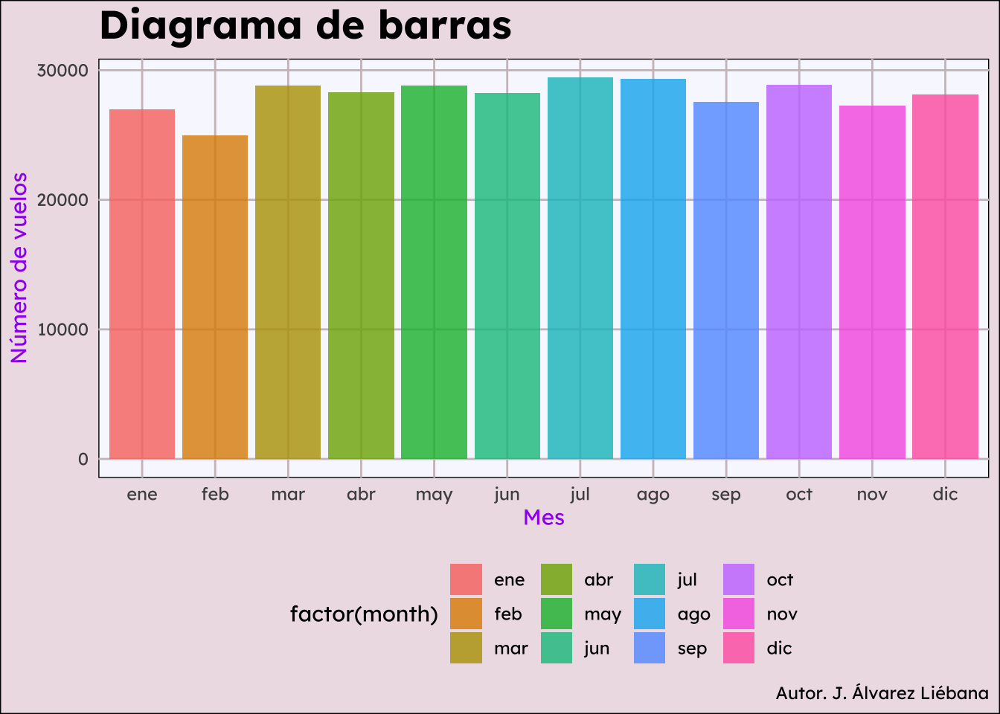
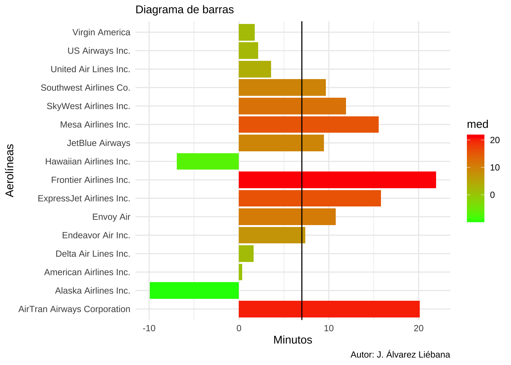
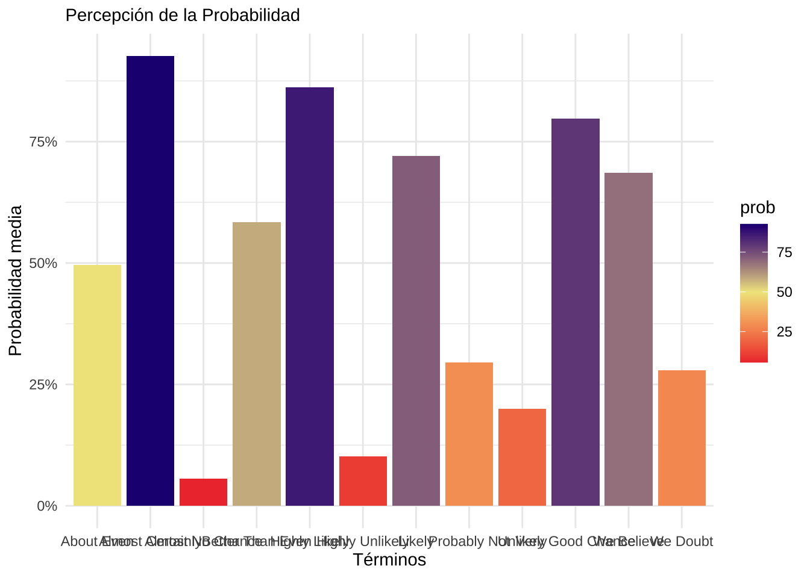
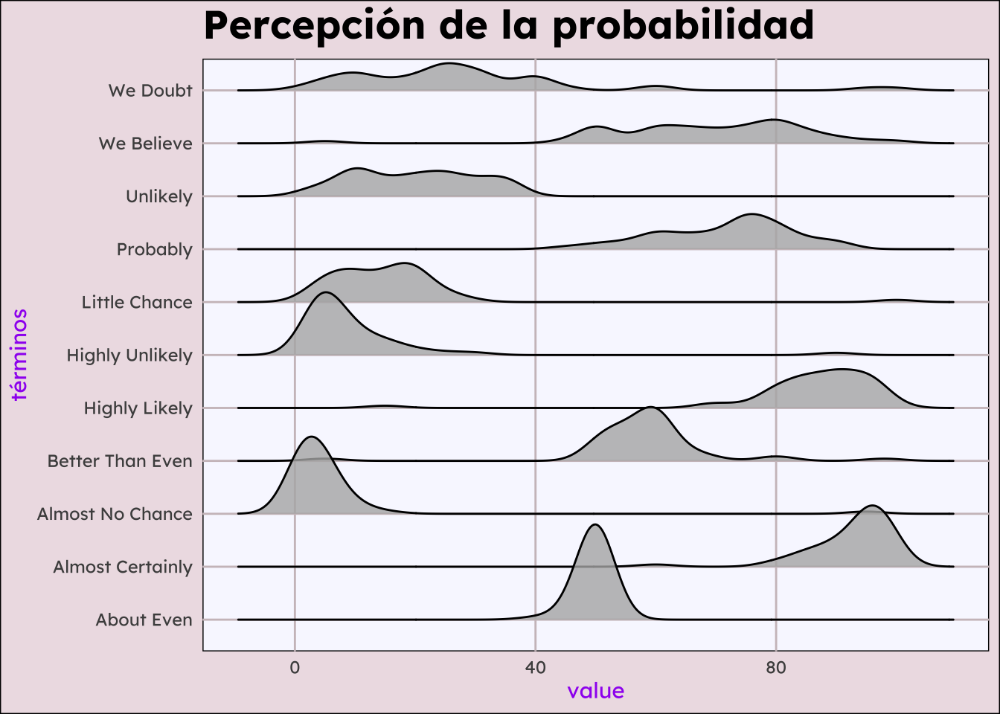
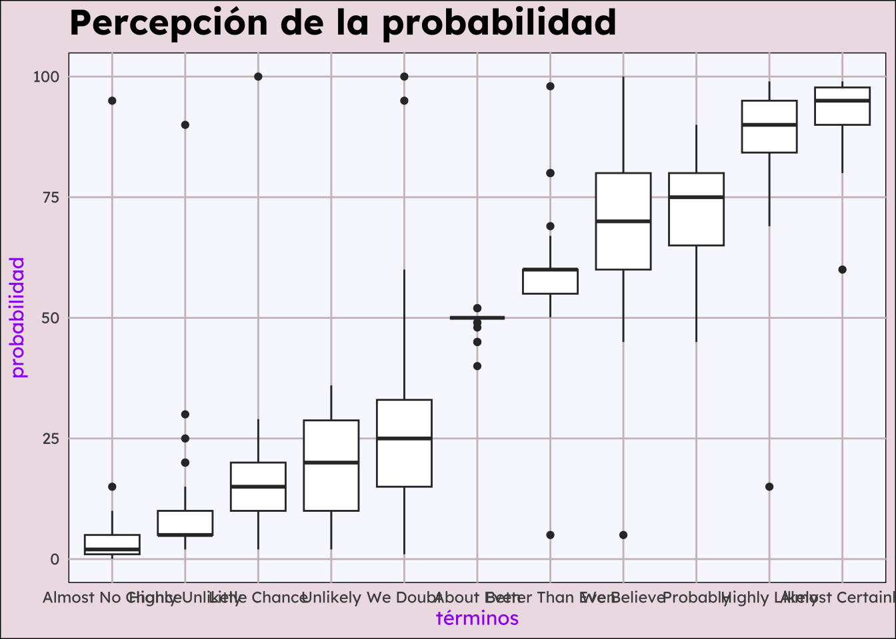

Modifica dentro del documento .qmd tus datos personales (nombre y DNI) ubicados en la cabecera del archivo.
Asegúrate, ANTES de seguir editando el documento, que el archivo .qmd se renderiza correctamente y se genera el .html correspondiente en tu carpeta local de tu ordenador.
Los chunks (cajas de código) creados están o vacíos o incompletos, de ahí que la mayoría tengan la opción #| eval: false. Una vez que edites lo que consideres, debes ir cambiando cada chunck a #| eval: true (o quitarlo directamente) para que se ejecuten.
Recuerda que puedes ejecutar chunk a chunk con el botón play o ejecutar todos los chunk hasta uno dado (con el botón a la izquierda del anterior).
Paquetes necesarios
Necesitaremos los siguientes paquetes (haz play en el chunk para que se carguen):
rm(list =ls()) # Borramos variables de environmentlibrary(glue)library(tidyverse)
── Attaching core tidyverse packages ──────────────────────── tidyverse 2.0.0 ──
✔ dplyr 1.1.4 ✔ readr 2.1.4
✔ forcats 1.0.0 ✔ stringr 1.5.1
✔ ggplot2 3.4.4 ✔ tibble 3.2.1
✔ lubridate 1.9.3 ✔ tidyr 1.3.0
✔ purrr 1.0.2
── Conflicts ────────────────────────────────────────── tidyverse_conflicts() ──
✖ dplyr::filter() masks stats::filter()
✖ dplyr::lag() masks stats::lag()
ℹ Use the conflicted package (<http://conflicted.r-lib.org/>) to force all conflicts to become errors
library(readxl)library(nycflights13)
Caso práctico: aviones
Ejercicio 1
Haciendo uso de los datasets del paquete {nycflights13}, reproduce lo más fielmente posible el siguiente gráfico
Scale for fill is already present.
Adding another scale for fill, which will replace the existing scale.

Ejercicio 3
Haciendo uso de los datasets del paquete {nycflights13}, reproduce lo más fielmente posible el siguiente gráfico, teniendo en cuenta que la línea vertical es la media global (sin desagregar por aerolíneas)
vuelo <- nycflights13::flightsaerolinea <- nycflights13::airlinescruce <- vuelo |>inner_join(aerolinea, by ="carrier")cruce
# A tibble: 16 × 2
name med
<chr> <dbl>
1 AirTran Airways Corporation 20.1
2 Alaska Airlines Inc. -9.93
3 American Airlines Inc. 0.364
4 Delta Air Lines Inc. 1.64
5 Endeavor Air Inc. 7.38
6 Envoy Air 10.8
7 ExpressJet Airlines Inc. 15.8
8 Frontier Airlines Inc. 21.9
9 Hawaiian Airlines Inc. -6.92
10 JetBlue Airways 9.46
11 Mesa Airlines Inc. 15.6
12 SkyWest Airlines Inc. 11.9
13 Southwest Airlines Co. 9.65
14 US Airways Inc. 2.13
15 United Air Lines Inc. 3.56
16 Virgin America 1.76
ggplot(media_global) +geom_col(aes(x = med, y = name, fill = med)) +scale_fill_gradient(low ="green", high ="red") +geom_vline(xintercept =7)+theme_minimal() +labs(subtitle ="Diagrama de barras",x ="Minutos",y ="Aerolíneas",caption ="Autor: J. Álvarez Liébana",color ="Retraso medio de llegada" )

Caso práctico: probabilidades
Ejercicio 1
Haciendo uso del dataset de probabilidades intenta replicar lo más fielmente el siguiente gráfico (realiza las transformaciones previas a los datos que consideres)
datos <-read_csv("https://raw.githubusercontent.com/zonination/perceptions/master/probly.csv")
Rows: 46 Columns: 17
── Column specification ────────────────────────────────────────────────────────
Delimiter: ","
dbl (17): Almost Certainly, Highly Likely, Very Good Chance, Probable, Likel...
ℹ Use `spec()` to retrieve the full column specification for this data.
ℹ Specify the column types or set `show_col_types = FALSE` to quiet this message.
resumen <- datos |>pivot_longer(cols ="Almost Certainly":"Chances Are Slight") |>group_by (name) |>summarise(prob =mean(value)) |>slice(c(1,2,3,4,6,7,9,13,14,15,16,17))resumen
# A tibble: 12 × 2
name prob
<chr> <dbl>
1 About Even 49.6
2 Almost Certainly 92.6
3 Almost No Chance 5.63
4 Better Than Even 58.4
5 Highly Likely 86.2
6 Highly Unlikely 10.1
7 Likely 72
8 Probably Not 29.5
9 Unlikely 19.9
10 Very Good Chance 79.8
11 We Believe 68.5
12 We Doubt 27.9
resumen |>ggplot(aes(x = name, y = prob)) +geom_col(aes(fill = prob)) +scale_fill_gradient2(low ="brown2", high ="navy", mid ="khaki", midpoint =50) +scale_y_continuous(labels = scales::label_number(suffix ="%"))+theme_minimal() +labs(subtitle ="Percepción de la Probabilidad",x ="Términos",y ="Probabilidad media",color ="Prob.media" )

Ejercicio 2
Repite el gráfico anterior pero ordenando las barras por la probabilidad media (de menos a más). Busca info de fct_reorder (paquete forcats para tratar cualis, incluido en tidyverse)
ggplot(resumen, aes(x =fct_reorder(name, prob), y = prob)) +geom_col(aes(fill = prob)) +scale_fill_gradient2(low ="brown2", high ="navy", mid ="khaki", midpoint =50) +scale_y_continuous(labels = scales::label_number(suffix ="%")) +theme_minimal() +labs(subtitle ="Percepción de la Probabilidad",x ="Términos",y ="Probabilidad media",color ="Prob.media" )
Ejercicio 3
Elimina los términos c(“Chances Are Slight”, “Improbable”, “Probably Not”, “Probable”, “Likely”, “Very Good Chance”). Tras ello, ¿cómo podríamos visualizarlo de manera continua, sin tener que resumirlo (no valen boxplots, ver ejercicio siguiente)? Realiza el gráfico o gráficos que consideres de manera que haya un por término (y mostrados juntos). Decide una paleta adecuada de colores.
library(ggridges)datos1 <- datos |>pivot_longer(cols ="Almost Certainly":"Chances Are Slight") |>filter(!name %in%c("Chances Are Slight", "Improbable", "Probably Not", "Probable", "Likely", "Very Good Chance"))ggplot(datos1)+ ggridges::geom_density_ridges (aes(x = value, y = name, fill = value), alpha =0.8,) +scale_fill_gradient(low ="coral2", high ="mediumorchid2") +labs(title ="Percepción de la probabilidad", y ="términos") + tema_sencillo
Picking joint bandwidth of 3.16
Warning: The following aesthetics were dropped during statistical transformation: fill
ℹ This can happen when ggplot fails to infer the correct grouping structure in
the data.
ℹ Did you forget to specify a `group` aesthetic or to convert a numerical
variable into a factor?

Ejercicio 4
¿Qué tipo de gráfico es? ¿Qué parte del código de un gráfico decide que algo sea un diagrama de puntos o un boxplot? Intenta replicarlo
ggplot(datos1) +geom_boxplot(aes(x =fct_reorder(name, value), y = value))+scale_fill_gradient2(low ="red", mid ="white", high ="navy") +labs(title ="Percepción de la probabilidad", x ="términos",y ="probabilidad") + tema_sencillo

Es un box-plot, muestra la mediana y los cuartiles de los valores que toman las distintas variables. Los puntos que aparecen son valores anómalos.